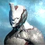

Excalibur
Hello there,
Excalibur (@poster-boy)
Projects
The Sacrifice
This is the primary quest where Excalibur Umbra is introduced. After completing Apostasy Prologue, players unlock this solo-only quest. It reveals the dark origin of Warframes.
The War Within
This quest is a prerequisite for The Sacrifice. It leads into the story arc involving Ballas, the Lotus, and the betrayal of the Orokin.
Chains of Harrow
A direct precursor to The Sacrifice. It follows the Tenno;s efforts to stop the spread of the Infestation and uncover the truth behind Ballas's actions.
Apostasy Prologue
The immediate prerequisite to The Sacrifice. It sets up the final confrontation with Ballas and the Lotus, leading directly into the events of The Sacrifice.
The Old Peace
While not involving Excalibur directly, this quest features Excalibur Prime, a version of the Warframe tied to the original Founders Pack.
Announcements
Trending